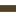

<!doctype html>
<html lang="en">
    <head>
        <meta charset="utf-8">
        <meta http-equiv="X-UA-Compatible" content="IE=edge">
        <meta name="viewport" content="initial-scale=1,user-scalable=no,maximum-scale=1,width=device-width">
        <meta name="mobile-web-app-capable" content="yes">
        <meta name="apple-mobile-web-app-capable" content="yes">
        <link rel="stylesheet" href="css/leaflet.css"><link rel="stylesheet" href="css/L.Control.Locate.min.css">
        <link rel="stylesheet" href="css/qgis2web.css"><link rel="stylesheet" href="css/fontawesome-all.min.css">
        <link rel="stylesheet" href="css/MarkerCluster.css">
        <link rel="stylesheet" href="css/MarkerCluster.Default.css">
        <style>
        html, body, #map {
            width: 100%;
            height: 100%;
            padding: 0;
            margin: 0;
        }
        </style>
        <title>EXPERIENCE MAP Provincia Pesaro e Urbino</title>
    </head>
    <body>
        <div id="map">
        </div>
        <script src="js/qgis2web_expressions.js"></script>
        <script src="js/leaflet.js"></script><script src="js/L.Control.Locate.min.js"></script>
        <script src="js/leaflet-svg-shape-markers.min.js"></script>
        <script src="js/leaflet.rotatedMarker.js"></script>
        <script src="js/leaflet.pattern.js"></script>
        <script src="js/leaflet-hash.js"></script>
        <script src="js/Autolinker.min.js"></script>
        <script src="js/rbush.min.js"></script>
        <script src="js/labelgun.min.js"></script>
        <script src="js/labels.js"></script>
        <script src="js/leaflet.markercluster.js"></script>
        <script src="data/ProvinciaPesaroeUrbino_4.js"></script>
        <script src="data/Comuni_5.js"></script>
        <script src="data/Tappe_6.js"></script>
        <script>
        var map = L.map('map', {
            zoomControl:true, maxZoom:28, minZoom:10
        }).fitBounds([[43.40268347887302,12.02896162344366],[43.98332280803989,13.329883813540652]]);
        var hash = new L.Hash(map);
        map.attributionControl.setPrefix('<a href="https://github.com/tomchadwin/qgis2web" target="_blank">qgis2web</a> &middot; <a href="https://leafletjs.com" title="A JS library for interactive maps">Leaflet</a> &middot; <a href="https://qgis.org">QGIS</a>');
        L.control.locate({locateOptions: {maxZoom: 19}}).addTo(map);
        var bounds_group = new L.featureGroup([]);
        function setBounds() {
        }
        var layer_GoogleSatelliteHybrid_0 = L.tileLayer('https://mt1.google.com/vt/lyrs=y&x={x}&y={y}&z={z}', {
            opacity: 1.0,
            attribution: '',
            minZoom: 10,
            maxZoom: 28,
            minNativeZoom: 0,
            maxNativeZoom: 19
        });
        layer_GoogleSatelliteHybrid_0;
        var layer_StamenTerrain_1 = L.tileLayer('http://tile.stamen.com/terrain/{z}/{x}/{y}.png', {
            opacity: 1.0,
            attribution: '',
            minZoom: 10,
            maxZoom: 28,
            minNativeZoom: 0,
            maxNativeZoom: 20
        });
        layer_StamenTerrain_1;
        var layer_OpenStreetMapStandard_2 = L.tileLayer('http://tile.openstreetmap.org/{z}/{x}/{y}.png', {
            opacity: 1.0,
            attribution: '',
            minZoom: 10,
            maxZoom: 28,
            minNativeZoom: 0,
            maxNativeZoom: 19
        });
        layer_OpenStreetMapStandard_2;
        var layer_CartoDbPositron_3 = L.tileLayer('http://basemaps.cartocdn.com/light_all/{z}/{x}/{y}.png', {
            opacity: 1.0,
            attribution: '',
            minZoom: 10,
            maxZoom: 28,
            minNativeZoom: 0,
            maxNativeZoom: 20
        });
        layer_CartoDbPositron_3;
        map.addLayer(layer_CartoDbPositron_3);
        function pop_ProvinciaPesaroeUrbino_4(feature, layer) {
            var popupContent = '<table>\
                    <tr>\
                        <td colspan="2">' + (feature.properties['COD_RIP'] !== null ? Autolinker.link(feature.properties['COD_RIP'].toLocaleString(), {truncate: {length: 30, location: 'smart'}}) : '') + '</td>\
                    </tr>\
                    <tr>\
                        <td colspan="2">' + (feature.properties['COD_REG'] !== null ? Autolinker.link(feature.properties['COD_REG'].toLocaleString(), {truncate: {length: 30, location: 'smart'}}) : '') + '</td>\
                    </tr>\
                    <tr>\
                        <td colspan="2">' + (feature.properties['COD_PROV'] !== null ? Autolinker.link(feature.properties['COD_PROV'].toLocaleString(), {truncate: {length: 30, location: 'smart'}}) : '') + '</td>\
                    </tr>\
                    <tr>\
                        <td colspan="2">' + (feature.properties['COD_CM'] !== null ? Autolinker.link(feature.properties['COD_CM'].toLocaleString(), {truncate: {length: 30, location: 'smart'}}) : '') + '</td>\
                    </tr>\
                    <tr>\
                        <td colspan="2">' + (feature.properties['COD_UTS'] !== null ? Autolinker.link(feature.properties['COD_UTS'].toLocaleString(), {truncate: {length: 30, location: 'smart'}}) : '') + '</td>\
                    </tr>\
                    <tr>\
                        <td colspan="2">' + (feature.properties['DEN_PROV'] !== null ? Autolinker.link(feature.properties['DEN_PROV'].toLocaleString(), {truncate: {length: 30, location: 'smart'}}) : '') + '</td>\
                    </tr>\
                    <tr>\
                        <td colspan="2">' + (feature.properties['DEN_CM'] !== null ? Autolinker.link(feature.properties['DEN_CM'].toLocaleString(), {truncate: {length: 30, location: 'smart'}}) : '') + '</td>\
                    </tr>\
                    <tr>\
                        <td colspan="2">' + (feature.properties['DEN_UTS'] !== null ? Autolinker.link(feature.properties['DEN_UTS'].toLocaleString(), {truncate: {length: 30, location: 'smart'}}) : '') + '</td>\
                    </tr>\
                    <tr>\
                        <td colspan="2">' + (feature.properties['SIGLA'] !== null ? Autolinker.link(feature.properties['SIGLA'].toLocaleString(), {truncate: {length: 30, location: 'smart'}}) : '') + '</td>\
                    </tr>\
                    <tr>\
                        <td colspan="2">' + (feature.properties['TIPO_UTS'] !== null ? Autolinker.link(feature.properties['TIPO_UTS'].toLocaleString(), {truncate: {length: 30, location: 'smart'}}) : '') + '</td>\
                    </tr>\
                    <tr>\
                        <td colspan="2">' + (feature.properties['Shape_Leng'] !== null ? Autolinker.link(feature.properties['Shape_Leng'].toLocaleString(), {truncate: {length: 30, location: 'smart'}}) : '') + '</td>\
                    </tr>\
                    <tr>\
                        <td colspan="2">' + (feature.properties['Shape_Area'] !== null ? Autolinker.link(feature.properties['Shape_Area'].toLocaleString(), {truncate: {length: 30, location: 'smart'}}) : '') + '</td>\
                    </tr>\
                </table>';
            layer.bindPopup(popupContent, {maxHeight: 400});
        }

        function style_ProvinciaPesaroeUrbino_4_0() {
            return {
                pane: 'pane_ProvinciaPesaroeUrbino_4',
                opacity: 1,
                color: 'rgba(81,66,37,1.0)',
                dashArray: '',
                lineCap: 'square',
                lineJoin: 'bevel',
                weight: 7.0,
                fillOpacity: 0,
                interactive: false,
            }
        }
        map.createPane('pane_ProvinciaPesaroeUrbino_4');
        map.getPane('pane_ProvinciaPesaroeUrbino_4').style.zIndex = 404;
        map.getPane('pane_ProvinciaPesaroeUrbino_4').style['mix-blend-mode'] = 'normal';
        var layer_ProvinciaPesaroeUrbino_4 = new L.geoJson(json_ProvinciaPesaroeUrbino_4, {
            attribution: '',
            interactive: false,
            dataVar: 'json_ProvinciaPesaroeUrbino_4',
            layerName: 'layer_ProvinciaPesaroeUrbino_4',
            pane: 'pane_ProvinciaPesaroeUrbino_4',
            onEachFeature: pop_ProvinciaPesaroeUrbino_4,
            style: style_ProvinciaPesaroeUrbino_4_0,
        });
        bounds_group.addLayer(layer_ProvinciaPesaroeUrbino_4);
        map.addLayer(layer_ProvinciaPesaroeUrbino_4);
        function pop_Comuni_5(feature, layer) {
            var popupContent = '<table>\
                    <tr>\
                        <td colspan="2">' + (feature.properties['COMUNE'] !== null ? Autolinker.link(feature.properties['COMUNE'].toLocaleString(), {truncate: {length: 30, location: 'smart'}}) : '') + '</td>\
                    </tr>\
                </table>';
            layer.bindPopup(popupContent, {maxHeight: 400});
        }

        function style_Comuni_5_0() {
            return {
                pane: 'pane_Comuni_5',
                opacity: 1,
                color: 'rgba(227,26,28,1.0)',
                dashArray: '',
                lineCap: 'butt',
                lineJoin: 'miter',
                weight: 2.0, 
                fillOpacity: 0,
                interactive: true,
            }
        }
        map.createPane('pane_Comuni_5');
        map.getPane('pane_Comuni_5').style.zIndex = 405;
        map.getPane('pane_Comuni_5').style['mix-blend-mode'] = 'normal';
        var layer_Comuni_5 = new L.geoJson(json_Comuni_5, {
            attribution: '',
            interactive: true,
            dataVar: 'json_Comuni_5',
            layerName: 'layer_Comuni_5',
            pane: 'pane_Comuni_5',
            onEachFeature: pop_Comuni_5,
            style: style_Comuni_5_0,
        });
        bounds_group.addLayer(layer_Comuni_5);
        map.addLayer(layer_Comuni_5);
        function pop_Tappe_6(feature, layer) {
            var popupContent = '<table>\
                    <tr>\
                        <th scope="row">Id</th>\
                        <td>' + (feature.properties['Id'] !== null ? Autolinker.link(feature.properties['Id'].toLocaleString(), {truncate: {length: 30, location: 'smart'}}) : '') + '</td>\
                    </tr>\
                    <tr>\
                        <th scope="row">Tappa</th>\
                        <td>' + (feature.properties['Tappa'] !== null ? Autolinker.link(feature.properties['Tappa'].toLocaleString(), {truncate: {length: 30, location: 'smart'}}) : '') + '</td>\
                    </tr>\
                    <tr>\
                        <th scope="row">Descrizione</th>\
                        <td>' + (feature.properties['Descrizione'] !== null ? Autolinker.link(feature.properties['Descrizione'].toLocaleString(), {truncate: {length: 30, location: 'smart'}}) : '') + '</td>\
                    </tr>\
                    <tr>\
                        <th scope="row">Attributi</th>\
                        <td>' + (feature.properties['Attributi'] !== null ? Autolinker.link(feature.properties['Attributi'].toLocaleString(), {truncate: {length: 30, location: 'smart'}}) : '') + '</td>\
                    </tr>\
                    <tr>\
                        <th scope="row">link</th>\
                        <td>' + (feature.properties['link'] !== null ? Autolinker.link(feature.properties['link'].toLocaleString(), {truncate: {length: 30, location: 'smart'}}) : '') + '</td>\
                    </tr>\
                    <tr>\
                        <th scope="row">portami</th>\
                        <td>' + (feature.properties['portami'] !== null ? Autolinker.link(feature.properties['portami'].toLocaleString(), {truncate: {length: 30, location: 'smart'}}) : '') + '</td>\
                    </tr>\
                </table>';
            layer.bindPopup(popupContent, {maxHeight: 400});
        }

        function style_Tappe_6_0(feature) {
            switch(String(feature.properties['Attributi'])) {
                case 'Arte e Cultura':
                    return {
                pane: 'pane_Tappe_6',
                shape: 'diamond',
                radius: 8.8,
                opacity: 1,
                color: 'rgba(128,17,25,0.0)',
                dashArray: '',
                lineCap: 'butt',
                lineJoin: 'miter',
                weight: 2.0,
                fill: true,
                fillOpacity: 1,
                fillColor: 'rgba(225,171,71,1.0)',
                interactive: true,
            }
                    break;
                case 'Natura':
                    return {
                pane: 'pane_Tappe_6',
                shape: 'diamond',
                radius: 8.8,
                opacity: 1,
                color: 'rgba(128,17,25,0.0)',
                dashArray: '',
                lineCap: 'butt',
                lineJoin: 'miter',
                weight: 2.0,
                fill: true,
                fillOpacity: 1,
                fillColor: 'rgba(111,207,212,1.0)',
                interactive: true,
            }
                    break;
                case 'Personaggi':
                    return {
                pane: 'pane_Tappe_6',
                shape: 'diamond',
                radius: 8.8,
                opacity: 1,
                color: 'rgba(128,17,25,0.0)',
                dashArray: '',
                lineCap: 'butt',
                lineJoin: 'miter',
                weight: 2.0,
                fill: true,
                fillOpacity: 1,
                fillColor: 'rgba(237,96,171,1.0)',
                interactive: true,
            }
                    break;
                case 'Storia':
                    return {
                pane: 'pane_Tappe_6',
                shape: 'diamond',
                radius: 8.8,
                opacity: 1,
                color: 'rgba(128,17,25,0.0)',
                dashArray: '',
                lineCap: 'butt',
                lineJoin: 'miter',
                weight: 2.0,
                fill: true,
                fillOpacity: 1,
                fillColor: 'rgba(105,223,85,1.0)',
                interactive: true,
            }
                    break;
            }
        }
        map.createPane('pane_Tappe_6');
        map.getPane('pane_Tappe_6').style.zIndex = 406;
        map.getPane('pane_Tappe_6').style['mix-blend-mode'] = 'normal';
        var layer_Tappe_6 = new L.geoJson(json_Tappe_6, {
            attribution: '',
            interactive: true,
            dataVar: 'json_Tappe_6',
            layerName: 'layer_Tappe_6',
            pane: 'pane_Tappe_6',
            onEachFeature: pop_Tappe_6,
            pointToLayer: function (feature, latlng) {
                var context = {
                    feature: feature,
                    variables: {}
                };
                return L.shapeMarker(latlng, style_Tappe_6_0(feature));
            },
        });
        var cluster_Tappe_6 = new L.MarkerClusterGroup({showCoverageOnHover: false,
            spiderfyDistanceMultiplier: 2});
        cluster_Tappe_6.addLayer(layer_Tappe_6);

        bounds_group.addLayer(layer_Tappe_6);
        cluster_Tappe_6.addTo(map);
            var title = new L.Control();
            title.onAdd = function (map) {
                this._div = L.DomUtil.create('div', 'info');
                this.update();
                return this._div;
            };
            title.update = function () {
                this._div.innerHTML = '<h2>EXPERIENCE MAP Provincia Pesaro e Urbino</h2>';
            };
            title.addTo(map);
            var abstract = new L.Control({'position':'bottomleft'});
            abstract.onAdd = function (map) {
                this._div = L.DomUtil.create('div',
                'leaflet-control leaflet-bar abstract');
                this._div.id = 'abstract'

                    abstract.show();
                    return this._div;
                };
                abstract.show = function () {
                    this._div.classList.remove("abstract");
                    this._div.classList.add("abstractUncollapsed");
                    this._div.innerHTML = 'Experience Map Provincia Pesaro Urbino<br /><br />Bozza prima versione <br /><br />Credits....';
            };
            abstract.addTo(map);
        var baseMaps = {};
        L.control.layers(baseMaps,{'Tappe<br /><table><tr><td style="text-align: center;"></td><td>Arte e Cultura</td></tr><tr><td style="text-align: center;"></td><td>Natura</td></tr><tr><td style="text-align: center;"></td><td>Personaggi</td></tr><tr><td style="text-align: center;"></td><td>Storia</td></tr></table>': cluster_Tappe_6,' Comuni': layer_Comuni_5,' Provincia Pesaro e Urbino': layer_ProvinciaPesaroeUrbino_4,"CartoDb Positron": layer_CartoDbPositron_3,"Open Street Map Standard": layer_OpenStreetMapStandard_2,"Stamen Terrain": layer_StamenTerrain_1,"Google Satellite Hybrid": layer_GoogleSatelliteHybrid_0,}).addTo(map);
        setBounds();
        </script>
    </body>
</html>
